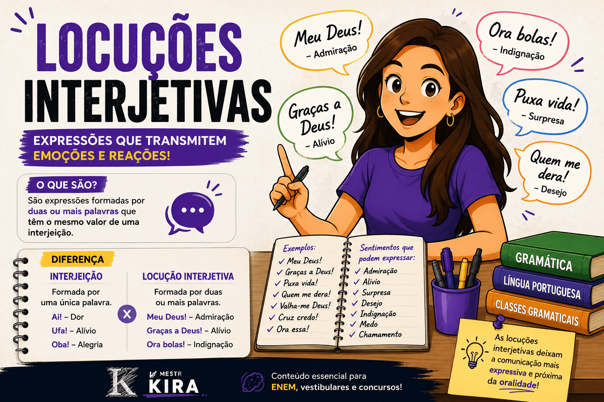

Locuções Interjetivas: conceito, exemplos, classificação e diferença para as interjeições
As locuções interjetivas são expressões formadas por duas ou mais palavras que desempenham a mesma função das interjeições. Elas são utilizadas para manifestar emoções, sentimentos, reações, desejos ou estados de espírito e tornam a comunicação muito mais expressiva.
Embora sejam compostas por mais de uma palavra, essas expressões funcionam como uma única interjeição, transmitindo rapidamente uma ideia de surpresa, alegria, medo, tristeza, admiração, indignação, alívio, chamamento ou outros sentimentos.
Neste guia do Mestre Kira, você aprenderá o que são locuções interjetivas, como identificá-las, verá dezenas de exemplos e entenderá a diferença entre elas e as interjeições simples.

O que são locuções interjetivas?
As locuções interjetivas são conjuntos de palavras que exercem a função de uma interjeição.
Enquanto a interjeição é formada por uma única palavra, a locução interjetiva é composta por duas ou mais palavras que, juntas, expressam um sentimento ou reação.
Exemplos:
Meu Deus!
Graças a Deus!
Ora bolas!
Quem me dera!
Valha-me Deus!
Puxa vida!
Cruz credo!
Características das locuções interjetivas
- São formadas por duas ou mais palavras.
- Expressam emoções e sentimentos.
- Dependem do contexto.
- São invariáveis.
- Aparecem frequentemente na linguagem oral.
- Costumam ser acompanhadas de ponto de exclamação.
Diferença entre interjeição e locução interjetiva
| Interjeição | Locução interjetiva |
|---|---|
| Uma palavra. | Duas ou mais palavras. |
| Ai! | Meu Deus! |
| Ufa! | Graças a Deus! |
| Ei! | Ora essa! |
| Nossa! | Puxa vida! |
Principais locuções interjetivas
Admiração
- Meu Deus!
- Nossa Senhora!
- Puxa vida!
Alívio
- Graças a Deus!
- Ainda bem!
Desejo
- Quem me dera!
- Tomara que sim!
Indignação
- Ora bolas!
- Ora essa!
Medo
- Cruz credo!
- Valha-me Deus!
Locuções interjetivas e o contexto
Assim como ocorre com as interjeições, o significado de uma locução interjetiva depende do contexto em que é utilizada.
Meu Deus! Que notícia maravilhosa!
Meu Deus! Que tragédia aconteceu.
A mesma expressão transmite sentimentos diferentes dependendo da situação comunicativa.
Como esse conteúdo aparece no ENEM?
No ENEM, as locuções interjetivas geralmente aparecem em questões de interpretação textual, tirinhas, charges, histórias em quadrinhos e textos literários.
A banca costuma avaliar:
- efeitos de sentido;
- expressividade;
- emoção transmitida;
- função da linguagem;
- contexto comunicativo.
Para aprofundar seus estudos, consulte também:
Questão comentada
Questão
Na frase "Graças a Deus! Finalmente terminou a tempestade.", a expressão destacada é:
A) Advérbio
B) Interjeição simples
C) Locução interjetiva
D) Locução verbal
E) Pronome
Resposta: alternativa C.
A expressão "Graças a Deus!" é formada por várias palavras que, juntas, expressam alívio e gratidão. Portanto, trata-se de uma locução interjetiva.
Resumo
- São expressões formadas por duas ou mais palavras.
- Exercem a função das interjeições.
- Expressam emoções e sentimentos.
- Dependem do contexto.
- São muito utilizadas na linguagem oral.
- Costumam aparecer em textos literários, HQs e propagandas.
Perguntas frequentes
O que são locuções interjetivas?
São expressões compostas por duas ou mais palavras que exercem a função de uma interjeição.
Qual a diferença entre interjeição e locução interjetiva?
A interjeição é formada por uma palavra; a locução interjetiva é composta por duas ou mais palavras.
Locuções interjetivas aparecem no ENEM?
Sim. Principalmente em questões de interpretação textual e análise dos efeitos de sentido.
"Graças a Deus" é uma locução interjetiva?
Sim. A expressão manifesta alívio ou gratidão e funciona como uma interjeição.
Explore Outros Conteúdos
Continue seus estudos acessando outras seções do site Mestre Kira: